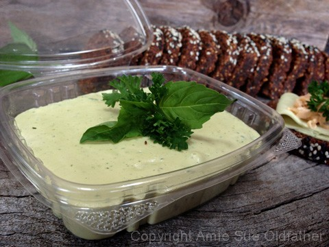
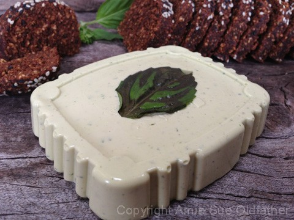
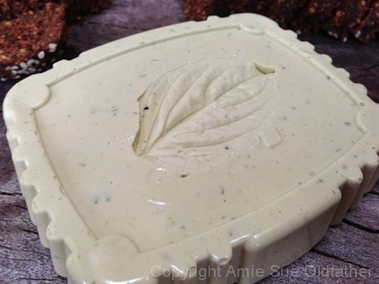
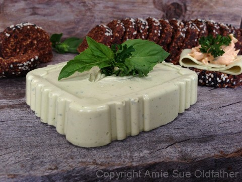
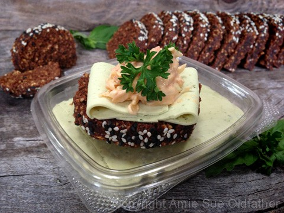

Leek & Herb Cheese

raw / vegan / gluten-free
Leeks have a very mellow, sweet onion flavorless pungent than garlic or regular onions. This is why I decided to use them in this cheese, to compliment the fresh herbs in the recipe.
When buying leeks be sure to choose fresh organic leeks, as they are rich in flavor and in nutrition. Look for uniform, long, firm, white stalks with healthy root bulb. Avoid stems with withered, yellow discolor tops. Once at home, wrap them in a paper towel and place them inside the refrigerator where they stay fresh for up to a week.
It is important to wash them well. I hope that you don’t mind me taking a moment to share simple instructions on how to wash leeks. When I first started using them, I didn’t know about this so just in case there is “another me” out there, I thought it would be best to share.
Dirt likes to hide in between all the layers. Start by washing off the leek and then trim away the root end. Then slice the lengthwise, avoiding using the last couple of inches of the dark green end. Follow by making crosswise cuts along the leek. Place the chopped leeks into a bowl and fill with cold water. Agitate the leeks in the water to dislodge any dirt that may be clinging to them. Dump the leeks into a colander, rinse one more time and then place in a new bowl. Use a dry paper towel to soak up as much water as possible.
If you can’t find leeks, you can substitute out with green garden onions. Those long skinny ones, not the bulbed onions. I think that those would be too strong for this delicate recipe. If you need this recipe to be nut-free, you can use soaked sunflower seeds instead.
I don’t have any recommendations for replacing the agar that will give the cheese the same texture. Agar is not a raw product, but it does have some great health benefits to it, so I feel ok for us to have it in our diet. I served this cheese on a Raw Pumpernickel Bread that I created. (recipe to follow one day soon)
Ingredients:
yields 2 cups
Cheese base:
- 1/2 cup water
- 3 Tbsp lemon juice
- 2 Tbsp tahini
- 1/2 cup chopped raw cashews, soaked 2+ hours
- 1/4 cup nutritional yeast
- 1 tsp Himalayan pink salt
- 1/2 tsp garlic powder or 2 garlic cloves
- 1/2 cup of chopped leeks, divided in 1/2
- 1 Tbsp fresh chopped basil, divided in 1/2
- 1 Tbsp fresh chopped parsley, divided in 1/2
Agar gel:
Preparation:
- Set aside a 2 cup storage container. You can use any shape or mold.
- Drain and discard the soak water from the cashews.
- In a high-speed blender add 1/2 cup water, lemon juice, tahini, cashews, nutritional yeast, salt, and garlic. Blend until smooth; no grit should be detected. Add half of the leeks, basil, and parsley and blend together.
- In a small saucepan bring 1 cup water to boil. Slowly add the agar stirring with a whisk. Reduce the heat and simmer, often whisking, for 5 to 10 minutes, or until completely dissolved.
- Before adding the agar gel to the blender, get a vortex going in it. A vortex looks like a small tornado in the batter. This will draw the agar down into the mix which will help it blend quickly.
- Slowly pour the agar gel into the blender while it is running. Be very careful that you don’t get sprayed with hot liquid. Working quickly. Process until completely smooth, scraping down the sides of the blender jar as necessary. Quickly add the remaining leeks, basil, and parsley and just blend it in for a few seconds. Leave bits and pieces for visual and texture purposes.
- Pour into a container and cool uncovered in the refrigerator.
- When completely cool, cover and chill for at least 15-30 minutes. To serve, turn out of the container and slice.
- Store covered in the refrigerator. Will keep 5 to 7 days.
- Pairs wonderfully with my Raw Pumpernickel Bread!

I know this doesn’t look appealing. I placed a basil leaf in the bottom of the container
before I poured the cheese mix into it.

I then removed it once I popped the cheese out. I was curious what it would look like.

Again be creative with the containers that you. It adds a lot of flare to it. :) Enjoy!


© AmieSue.com